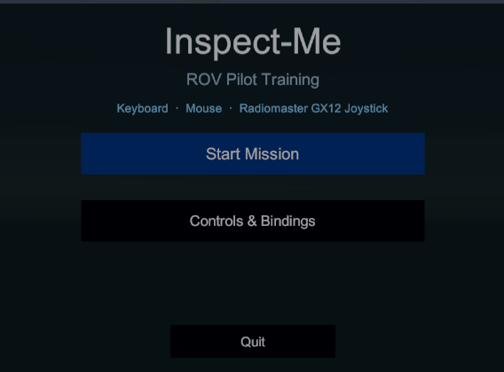
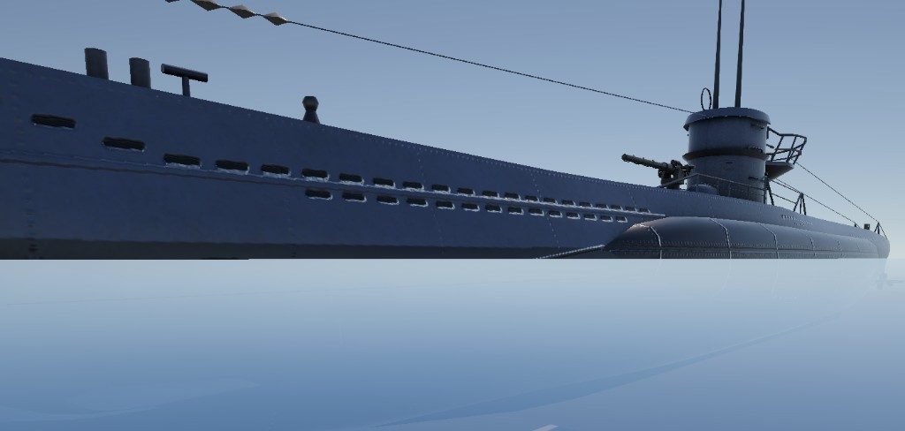
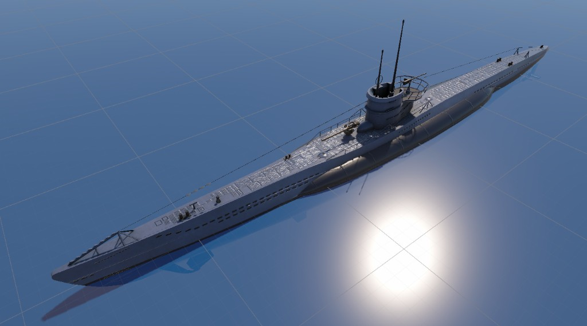

4-DOF piloting
Dual-stick control: surge and yaw on one axis pair, heave and sway on the other. The vehicle holds attitude, like typical inspection ROV defaults.
INSPECT-ME LIGHT INSPECTION-CLASS ROV · TRAINING SIM STATION 04 · 47°12′N
Pilot a light-inspection ROV. Photo-survey hulls and submerged structures. Find and capture every target — and score the dive.
In active development · first release free to play · coming 2026

DRAG TO ORBIT · THE ROV YOU PILOT
The survey
Each mission drops you on a structure that needs inspecting. Fly the hull, find every General-Arrangement component on the checklist, and photograph it cleanly. Coverage and capture quality drive your score — just like a real survey report.
SHEET 01 — Tap a hotspot to capture a target. 0 / 3 captured
Built for realism
Inspired by professional inspection workflows — not arcade flight.
Dual-stick control: surge and yaw on one axis pair, heave and sway on the other. The vehicle holds attitude, like typical inspection ROV defaults.
Drag, buoyancy, and restoring forces modeled after marine vehicle dynamics — so momentum, drift, and station-keeping feel authentic.
Tilt the camera to scan hulls and confined spaces, with a clean overlay reading depth, heading, altitude, and body velocities.
Locate and capture every General-Arrangement component on the vessel. Coverage and capture quality drive your mission score.
Broadcast your FPV feed over HTTP as MJPEG — open it in VLC or a browser so observers watch on a separate display.
Bind surge, sway, heave, yaw, and camera tilt to any gamepad or keyboard. Swap devices mid-session with live detection.
Light inspection class
No brand names — just the vehicle class used worldwide for visual inspection in ports, dams, aquaculture, and industrial assets.
Early preview
Work-in-progress shots from the current build — visuals and missions are still evolving.



Launching soon
Inspect-Me is in active development and the first release will be free to play. Star or watch the project on GitHub to know the moment the build drops.
Planned for Windows · macOS · Web
FAQ
Inspect-Me is in active development. Star or watch the GitHub repo to get notified when the first public build drops.
The first release is free to play. The source is available on GitHub under a source-available license — free to use, but not to copy or redistribute. See the license in the repo.
No. Inspect-Me models the light inspection-class category — compact tethered vehicles with 4-DOF piloting and FPV workflows common across the industry. No brand names appear in the simulator.
Yes — the sim streams MJPEG over HTTP on a local port, so pilots and observers can use separate displays (open it in VLC or a browser), just like real operations.
A PC with a dedicated GPU is recommended. Keyboard, mouse, and gamepad/joystick support are built in, with full remappable bindings.
If you build ROVs and would like to discuss collaboration, we'd love to hear from you — reach out at mathewharvey@gmail.com.